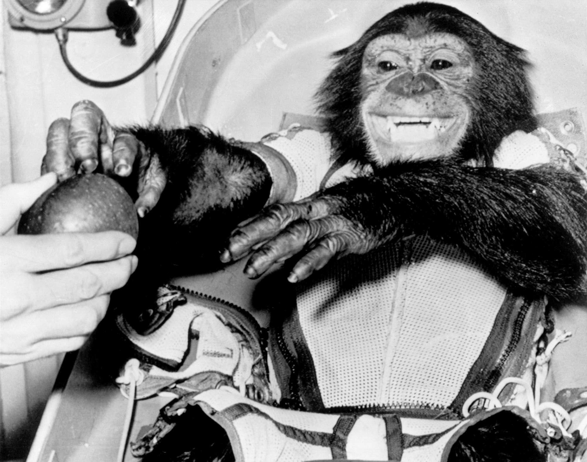
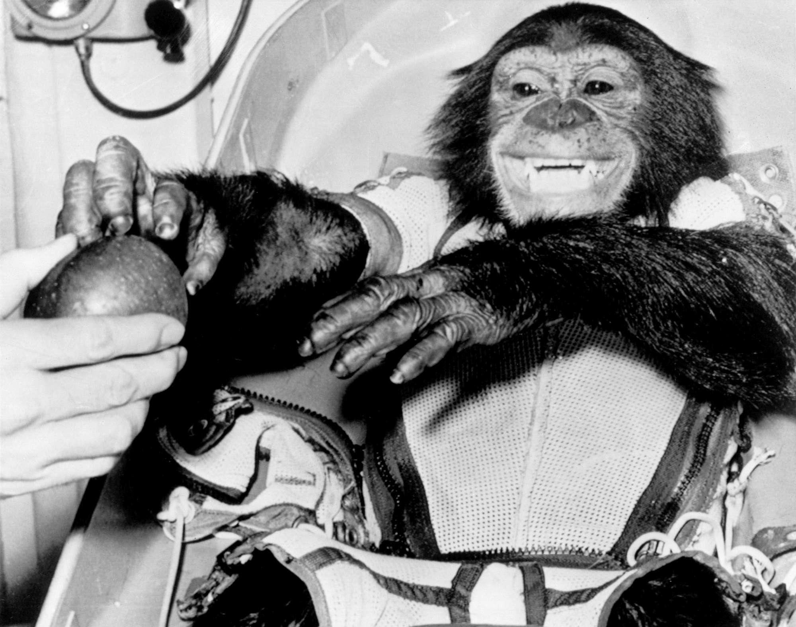

Inter-Space
Mission: FDM7L0
Destination: Mars
Mission Date: 16/03/2022
Description: this missions allows to comunicate with the earth with a kink of Internet in the space. A satellite will act as a router to establish a Peer-To-Peer connection between the server of APE-X and the computer on Mars, the astronauts are trying to create it with not too much delay.
Equipment: for a satellite we must consider the deterioration of the thermo-optical properties of the surfaces is critical. The satellite has to keep working to allow a better comunication.
Space Zoo
Mission: ANEW78
Destination: Mars
Mission Date: 3/08/2022
Description: we want to create zoo in the space for two reasons: first of all to preserve all the species of animals, and then also to create a small tourism center. A lot of missions in the past has already experimented this situation with different animals like monkeys, and we are almost ready to reach this objective.
Equipment: each species of animal must have an appropriate location to live, and obviously they need food. This missions require a lot of resources but we think the future is somewhere in the space, so we want to expand our lifestyle to reach a serene life in the space for all.
Mine-Moon
Mission: 5N278D
Destination: Moon
Mission Date: 30/11/2022

Description: today we only know surface of the moon and the material of which it
is made. But is plausible there are a lot of minerals that we don't know yet.
We don't want to
ruin the surface of the moon but only to some researches about what'inside of it, and maybe it hides
a treasure.
Equipment: obviously will need a drill, maybe an excavator, surely all the examintion tools to identify the properties of the minerals.
Mine-Mars
Mission: F4672A
Destination: Mars
Mission Date: dd/mm/yyyy
Description: the reasons are the same of the "Mine-Moon".
Today we only know
surface of the moon and the material of which it is made. But is plausible there are a lot of
minerals that we don't know yet. We don't want to ruin the surface of the moon but only to some
researches about what'inside of it, and maybe it hides a treasure.
Equipment: obviously will need a drill, maybe an excavator, surely all the examintion tools to identify the properties of the minerals.
Gym Space
Mission: 2M42K1
Destination: ISS
Mission Date: 20/12/2022
Description: all astronatus must stay healthy in space, and all current astronatus are doing a great job. But a huge part of training instruments are too old and must replaced. All of this instruments are located in the International Space Station.
Equipment: most of instruments are barbell, dumbbells, lat machines, and for each of these there are 10, 20, 25, 30, 35, 40 kg weights.
Maintenance ISS
Mission: 0RK6M7
Destination: ISS
Mission Date: 19/03/2023
Description: The International Space Station mainly performs the function of a scientific research laboratory, for which it offers the advantage over spacecraft, such as the Space Shuttle, of being a long-term platform in the space environment, in which long-term experiments can be conducted in weightlessness. A Maintenance is mandatory if we want to keep active this structure.
Equipment: Maintenance instruments for elettrical and mechanical structures.
APE-X Crew Dragon
Mission: 2BDF88
Destination: International Space Station
Mission Date: 30/05/2020
Description: Following the success of Demo 1 in March 2019, the launch was set for July of the same year, preceded by one month from the flight abandonment test. It was originally planned to be a test mission with a crew of two astronauts with a 14-day stay on the International Space Station (ISS). In April 2019, however, the launch was postponed to a date to be decided pending the results of the investigation into the accident that took place on April 20, which saw the destruction of the capsule used in the Demo 1 mission following ground tests on the Draco and SuperDraco engines.
Equipment: APE-X calculated the loss-of-crew (LOC) probability for the test flight as 1-in-276, lower than the commercial crew program requirement threshold of 1-in-270. The 1-in-276 number included mitigations to reduce the risk, such as on-orbit inspections of the Crew Dragon spacecraft once it was docked to the space station to look for damage from micrometeoroids and orbital debris (MMOD). APE-X pegged the overall risk of a loss of mission (LOM) as 1-in-60, covering scenarios where the Crew Dragon does not reach the space station as planned, but the crew safely returns to Earth.
Chang'e 4
Mission: H65S32
Destination: Moon
Mission Date: 3/01/2019
Description: Chang'e 4 is a mission of China's moon exploration program planned for 2018 and successfully launched on December 7. The mission includes an orbiter, a lander and a rover to explore the far side of the moon
Equipment: A collaboration of 28 Chinese research institutes and universities sent an aluminum alloy cylinder, weighing about 3 kg, a mini-biosphere supported by nutrients and water. Sunlight is filtered into the container through a "tube" and small cameras will monitor the micro environment. Inside were contained some cotton seeds, potatoes, rapeseed, arabetta, yeast and fruit fly eggs
New Horizons
Mission: FN3667
Destination: Pluto
Mission Date: 1/01/2019
Description: New Horizons is a space probe developed by APE-X for the exploration of Pluto and its satellite Charon. The launch took place on January 19, 2006 from the Cape Canaveral base and the overflight of Pluto took place on July 14, 2015, at 13:49:57 Italian time
Equipment: The Long Range Reconnaissance Imager, a high resolution digital camera in the visible range. The Pluto Exploration Remote Sensing Investigation consisting of two instruments, a Ralph telescope with different analyzable wavelengths, a CCD for visible wavelengths, an infrared spectroscope and a spectroscope for the ultraviolet. The high energy particles are analyzed by the instrument consisting of SWAP an electrostatic toroidal analyzer and PEPSSI an ion flight life meter and electron sensor.
Falcon 9
Mission: GMTE74
Destination: International Space Station
Mission Date: 21/12/2019
Description: First landing for an orbital (VTVL). Ape-x will use the Falcon 9 to launch the Crew Dragon towards the ISS, but for now it is only being tested
Equipment: Equipped with instruments that would analyze fields, particles and dust in interplanetary space, it was powered by a radioisotope thermoelectric generator
Astro-Monkey
Mission: MS5H36
Destination: Moon
Mission Date: 21/10/2020
 

Description: the purpose of this missions is to observe the life in the space of some species of animals and evalute if they would be able to live properly in the space. This mission is countinuing to experiment a lot of different animals, each animal is located in a sealed room.
Equipment: the mission need essentially space suits for the astronauts, and we are testing a prototype of new spacesuit for some specific animals like monkey, because monkey is nearest animal to the humans
Veggie
Mission: ASAM28
Destination: ISS
Mission Date: 1/11/2020
Description: with this mission we celebrate the first lettuce grown in the space. The lettuce was grown in the ISS with the help of LED panels to create enough light. The only problem is there is not enough space in the ISS to make grown a great quantity of plants.
Equipment: spacesuits for astronauts, herbicides, fertilizer, lettuce seeds and other cultivation tools
Mars-House
Mission: DG56AG
Destination: Mars
Mission Date: 10/12/2020
Description: for a house we means a structure where people are be able to breath freely. The house will have only have 3 rooms: one will act as an interlude between the space with no oxigen and the house, one with the purpose to grown plant, and the last one is a bedroom. This mission represent a great possibility for living in space.
Equipment: all the necessary to build a house, and each passangers must have one spacesuit for themself
Sonda Cassini-Huygens
Mission: DG56AG
Destination: Titan
Mission Date: 14/01/2015
First soft landing on Saturn's satellite Titan. Titan is the largest natural satellite of the planet Saturn and one of the most massive rocky bodies in the entire solar system. The Cassini-Huygens exploration led to the discovery of liquid hydrocarbon lakes in the satellite's polar regions. Geologically the surface is young; there are some mountains and possible cryovolcanoes, but it is generally flat and smooth with few impact craters observed.
Equipment: Cassini-Huygens is the spacecraft that mapped Titan's surface using radar instruments.
Opportunity rover
Mission: 97KGE1
Destination: Mars
Mission Date: 25/01/2010
Description: Opportunity discovered the first meteorite that fell on another planet, analyzed the Victoria crater for two years, and fortunately survived dust storms that threatened to interrupt its activity in 2007. In 2008 it therefore began to head towards the Endeavor crater which it reached in summer 2011.
Equipment: Opportunity is the spacecraft that explored Mars.
Expedition 1
Mission: DF67A1
Destination: International Space Station
Mission Date: 2/11/2007
Description: The crew of Expedition 1 consisted of a US commander and two Russian flight engineers. The commander, William Shepherd, had already been in space three times, always on Shuttle missions lasting up to a week. Both Russians, Yuri Gidzenko and Sergei Krikalev, boasted previous long-duration space flights on the Mir; especially Krikalev had spent more than a full year in space.
Equipment: The three visiting space shuttles brought vital equipment, supplies and components to the space station. The first of these, STS-97, docked in the early days of 2000 and delivered the first pair of large photovoltaic panels that will make up the Integrated Truss Structure, increasing the station's power by five times
Ulysses
Mission: NE904A
Destination: Sun
Mission Date: 8/02/2002
Description: Ulysses was a robotic space probe developed in collaboration by the European Space Agency, NASA and APE-X for the study of the Sun and the heliosphere from an orbit with a high inclination with respect to the ecliptic plane. Ulysses made it possible to observe the solar poles for the first time. Originally referred to as the International Solar Polar Mission, it was renamed after the Greek hero Ulysses who ventured by sea to unexplored routes.
Equipment: Equipped with instruments that would analyze fields, particles and dust in interplanetary space, it was powered by a radioisotope thermoelectric generator
Voyager 2
Mission: 3B35S8
Destination: Neptune
Mission Date: 25/08/1999
Description: The Voyager 2 spacecraft is one of the earliest exploratory probes in the outer solar system, and is still in operation. It was launched on August 20, 1977 by APE-X from Cape Canaveral, aboard a Titan III rocket, shortly before its sister probe, Voyager 1, into an orbit that would later take it to visit the planets. The two probes belong to the same Voyager program and are identical.
Equipment: spacecraft Voyager 2: Imaging Science System (ISS), Ultraviolet Spectrometer (UVS), Infrared Interferometer Spectrometer (IRIS), Planetary Radio Astronomy Experiment (PRA), Photopolarimeter (PPS), Triaxial Fluxgate Magnetometer (MAG), Plasma Spectrometer (PLS), Low-Energy Charged Particles Experiment (LECP)
Voyager 1
Mission: F3N20N
Destination: Uranus
Mission Date: 24/01/1996
Description: The Voyager 1 spacecraft is one of the earliest explorers of the outer solar system, still active today although it has reached the heliopause. The launch took place as part of APE-X's Voyager Program on September 5, 1977 from Cape Canaveral aboard a Titan IIIE rocket, a few days after its sister probe Voyager 2, in an orbit that would have allowed it to reach Jupiter first.
Equipment: spacecraft Voyager 1: Imaging Science System (ISS), Ultraviolet Spectrometer (UVS), Infrared Interferometer Spectrometer (IRIS), Planetary Radio Astronomy Experiment (PRA), Photopolarimeter (PPS), Triaxial Fluxgate Magnetometer (MAG), Plasma Spectrometer (PLS), Low-Energy Charged Particles Experiment (LECP)
Mariner 10
Mission: FGM542
Destination: Venus
Mission Date: 5/02/1990
Description: Mariner 10 flew over Venus on February 5, 1990 and the closest approach was reached at 17:01 UT when the probe passed 5768 km from the surface. In the days preceding the passage there was a failure in the operation of the onboard gyroscopes. For this reason, navigation during the swing-by was entrusted to star and solar sensors, entailing the risk that the entry of Venus into their visual field could cause a change in the attitude of the probe and the loss of pointing of the observation instruments.
Equipment: The probe was powered by a liquid propellant rocket engine whose nozzle protruded from the center of the sun shield. The engine generated a thrust of 222 N.